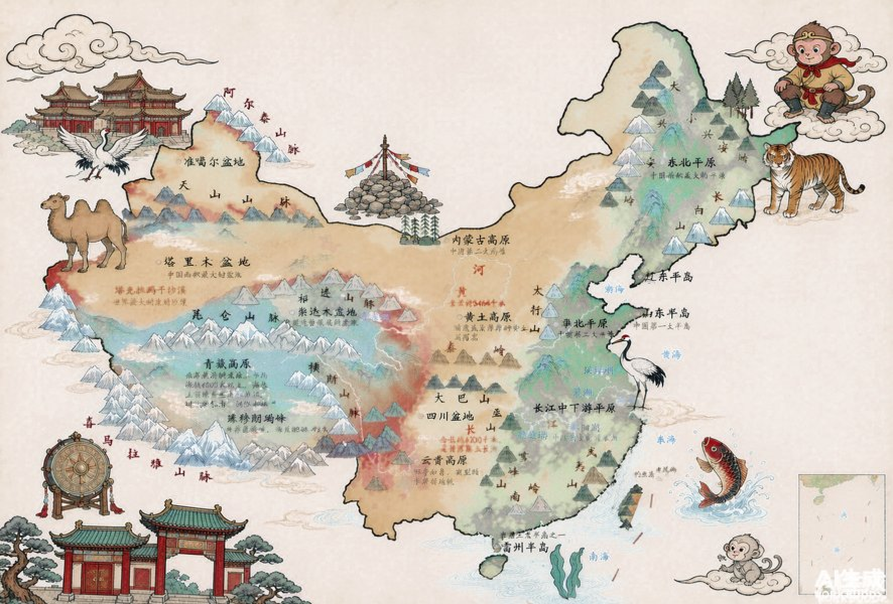
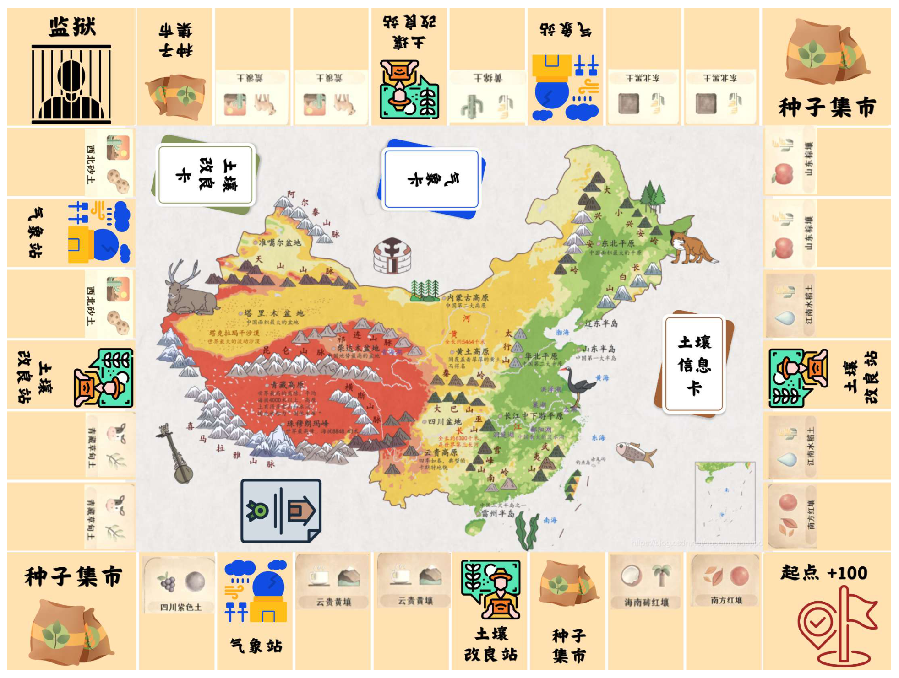

图鉴
全部卡牌道具的详细信息 —— 土地、作物、气象、改良，不受谁持有影响。

绕中国地图种地，赢满仓丰收。
一方水土一方农，四个部落四种活法。
根植华夏土壤与农耕血脉，打造趣味玩法，感受农业与地理的奥秘。
四个部落的特长差别很大 —— 起始位置、盈利能力、行动节奏各不相同。单机模式可在顶栏切换，你操控其中一个部落。
规则很轻：掷骰 → 走格 → 买地 → 种收 三分钟上手，一局十几分钟
菜农部落是一款以种菜、农业改良、收获售卖为核心玩法的策略桌面游戏（类大富翁玩法）。
玩家扮演不同部落，通过抢占肥沃土地、规划作物种植、收获蔬菜积累财富。
玩家可以在轻松欢乐的农耕博弈中体验策略规划和财富增长的乐趣。
初始额度按「行动顺序」发放 —— 排在第几就拿多少，先手是有补偿的。
两颗骰子决定走几格。丝绸部落每 2 回合还能追加一颗「追风骰」。
逐格前进，经过起点得 50 币；落在他人土地要付一半地价，过路不收费。
土地格看归属，站点格发牌 —— 集市卖种、气象站给卡、改良站发改良。
只能给「脚下的地」买地与种植；地里作物随时可收，收完这块地本回合不能再种。
判定胜负或破产，然后按本局抽签的顺序交给下一位。
每经过一次得 50 肥力币。绕得越勤，财路越稳。
买作物卡囤手上。种一片消耗一张 —— 没种子就种不了。
抽一张延时气象卡，下次种植自动生效（一次性，可为负）。
抽改良卡：抽到即得面值肥力币，持有期间按面值折算加成收获。
落在上面暂停一回合，反思不当农业行为。路过不坐牢。
① 堆满肥力币：轮到自己的回合结束时，手上金币达到胜利线（默认 260，可在设置里调）即刻获胜。
② 成为最后的幸存者：其他部落全部欠款破产，只剩你一个 —— 你赢。
允许欠款，但最低到 −50。一旦欠超过 50，该部落破产退出本局，名下土地全部回归无主。
其余部落继续玩，不受影响。破产后不再参与行动顺序。
全部卡牌道具的详细信息 —— 土地、作物、气象、改良，不受谁持有影响。
完整规则与参数表，含过路费、破产、种子上限等全部细则。
调整各部落初始金额、胜利线、电脑行动速度与背景音乐音量。
「小禾」问答手册 —— 你可能遇到的 33 个问题，答完就会玩。
四个部落的背景小故事 —— 从哪里来，为什么擅长这个。
成就系统与我的农事 —— 只记荣耀，不碰胜负。

每局开局随机抽签 —— 从左到右就是这一局的先后手次序。
正在载入图板…